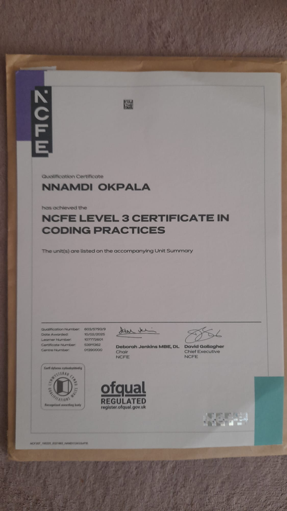
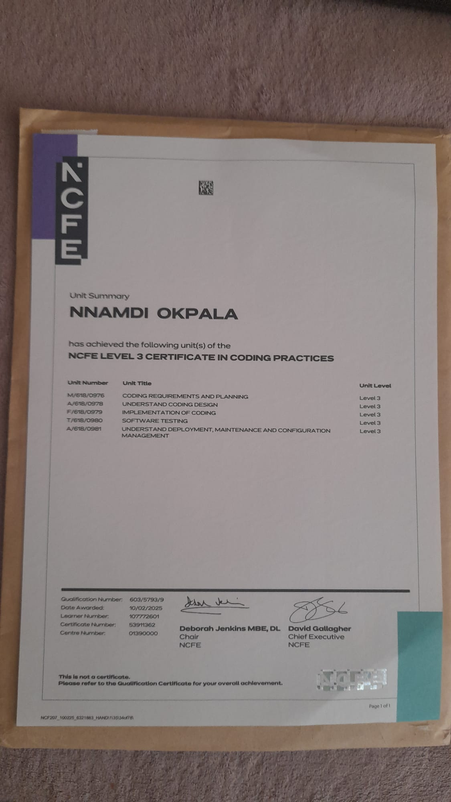

OBINexus / OBI
Certificates
Certificates This page preserves certificate evidence as accessible documentation images. NCFE Level 3 Certificate in Coding Practices Awarded to Nnamdi Okpala on 10/02/2025 for the NCFE Level 3 Certificate in Coding Practices. Unit Summary The unit summary l...
Certificates
This page preserves certificate evidence as accessible documentation images.
NCFE Level 3 Certificate in Coding Practices
Awarded to Nnamdi Okpala on 10/02/2025 for the NCFE Level 3 Certificate in Coding Practices.

Unit Summary
The unit summary lists coding requirements and planning, coding design, implementation of coding, software testing, and deployment, maintenance and configuration management.
